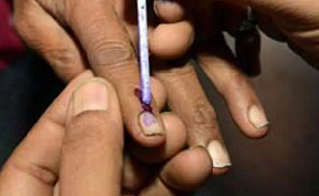

HYDERABAD: The Greater Hyderabad Municipal Corporation today said it has planned to increase the voting percentage of disabled people for the coming assembly polls.
The disabled people will be provided free transportation, wheelchairs, toilets for women and helpers or escorts, besides other facilities.
Campaigns are being taken up on a priority basis to create awareness about modernised EVMs and VVPATS at community halls, parks and important public places to educate the disabled, a GHMC release quoted its commissioner and District Election Officer (DEO) M Dana Kishore as saying.
The DEO said available records showed there are around 29,000 disabled pensioners and added that directions have been given to officials concerned to thoroughly verify and enroll their names in the electoral rolls by visiting their homes.
"Certain instructions have been given to ensure that the names of disabled people are in the electoral rolls at the nearest polling stations of their residence," he said.
GHMC would provide free transportation, wheelchairs, ramps, toilets for women, helpers or escorts, basic minimum facilities at all polling stations to enable them cast their vote in the first hour on polling day, he said.
On suggestions by representatives of the disabled committee, the DEO said the points they raised would be properly implemented well in advance of the commencement of the elections and further suggestions were also welcome.
At a review meeting, the DEO said 18,000 Swachh workers would be deployed as escorts or helpers at all polling stations. A nodal officer would be appointed to look after the polling process of the disabled people, he said.
Free Transportation, Wheelchairs For Disabled In Telangana Assembly Polls

Campaigns on priority are providing informations about modernised EVMs and VVPATS.